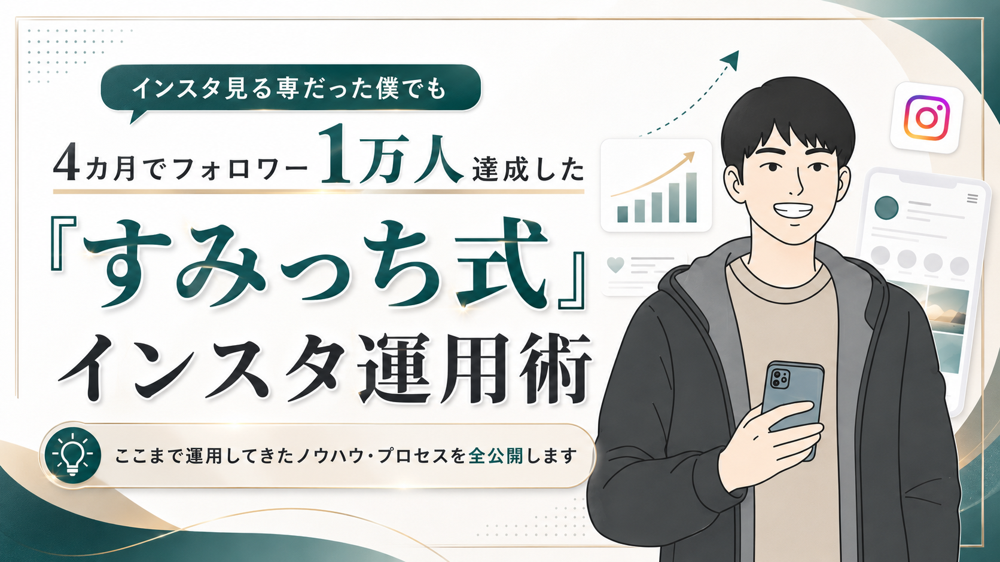
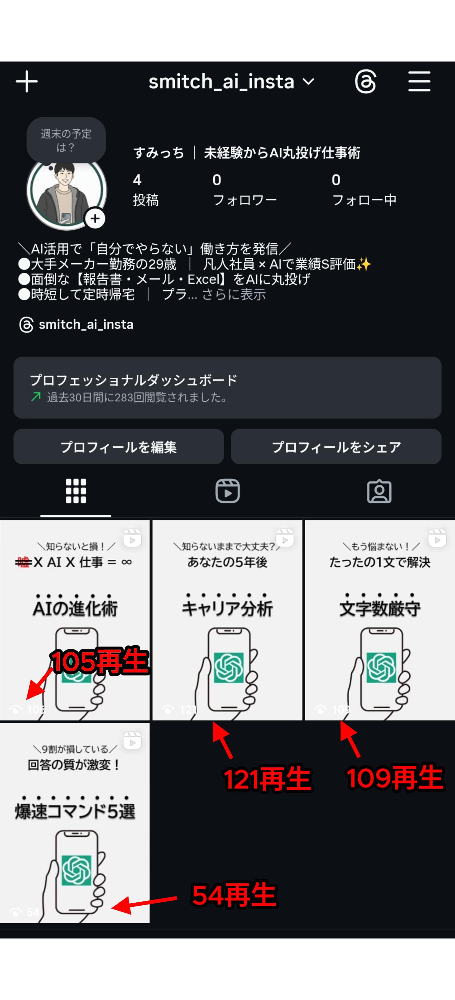
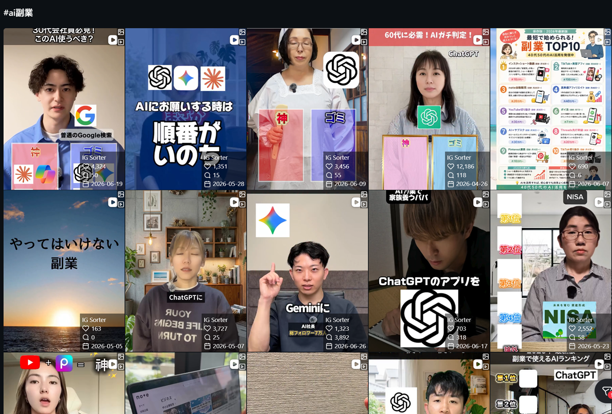
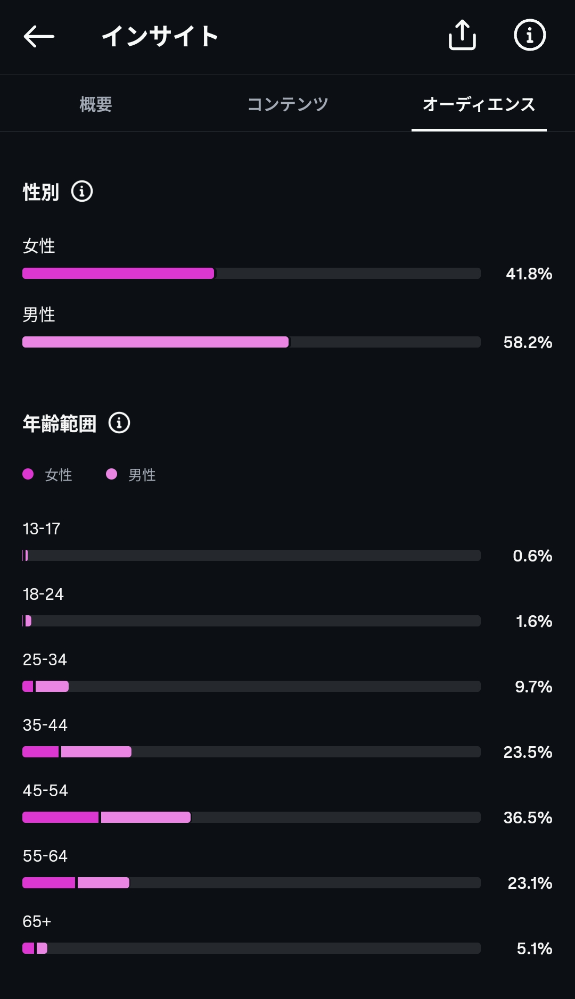
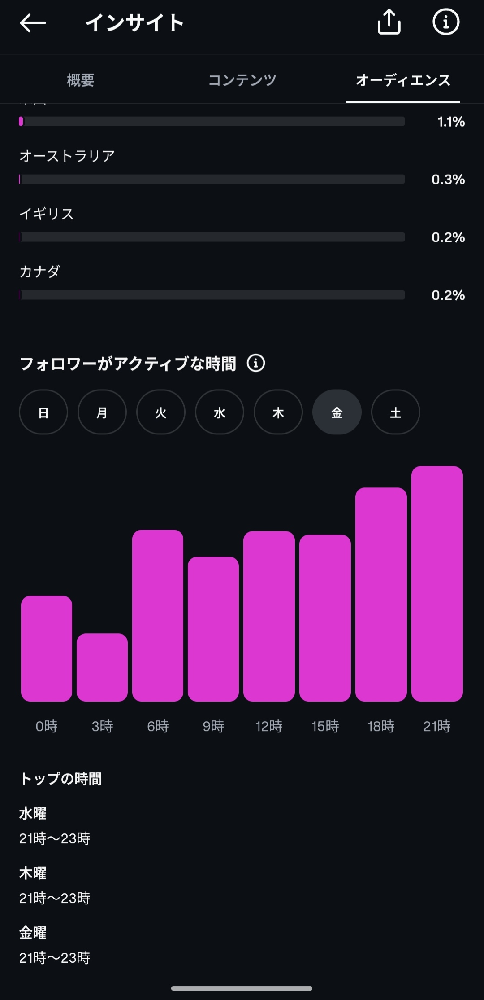
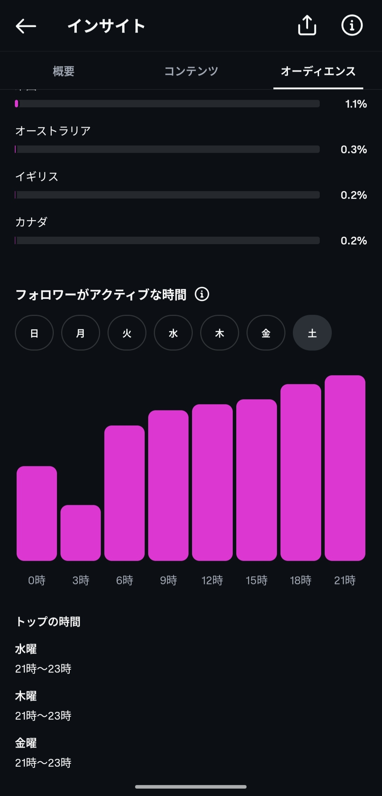
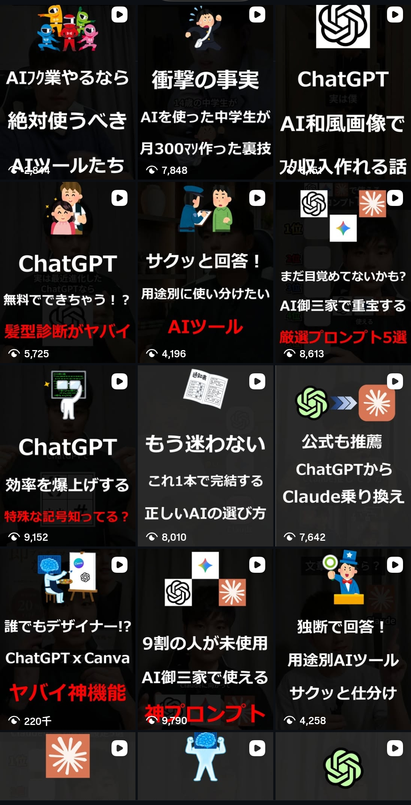
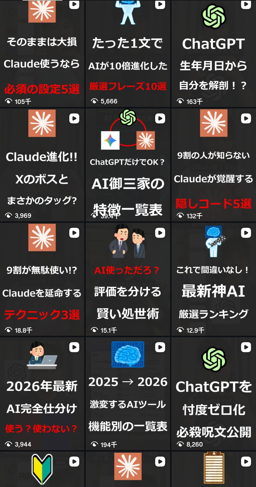

再生数50~150回の伸びない時期、僕も経験してます。
最初からうまくいかなくても、量をこなせばちゃんといつか伸びます！

毎回の動画で、僕はこの3ステップをただただ愚直に回し続けています。特別なことは一つもありません。

こうやって日々、伸びているアカウントを巡回リサーチしています。
「これはいける」と思った構成は、基本的に迷わず丸ごと真似る。
3パターンで実際にやってみたのが右の例。
冒頭は「ChatGPT」など、みんなが知っているワードやセリフでフックを作り、まず指を止めさせます。
そして冒頭から7〜10秒以内には本題へ。インスタは基本スワイプされる前提だからこそ、飽きられる前に・スワイプされる前に、端的にテンポよく本題に入ります。
属性（「現役エンジニア」「社畜」「30歳会社員」など）は、節々に少しだけ掛け合わせて差別化します！
僕は発信で迷いを見せません（実際は迷っていますけど...笑）。
「ChatGPTの最新アプデは凄いと思います」ではなく、「最強です。これ以外使う必要はありません」と言い切ります！
視聴者は「答え」を求めがち。
言い切ることで、そのまま信頼につながっていきます。
自信を持って言い切ることが、今の僕のアカウントらしさになっています。




